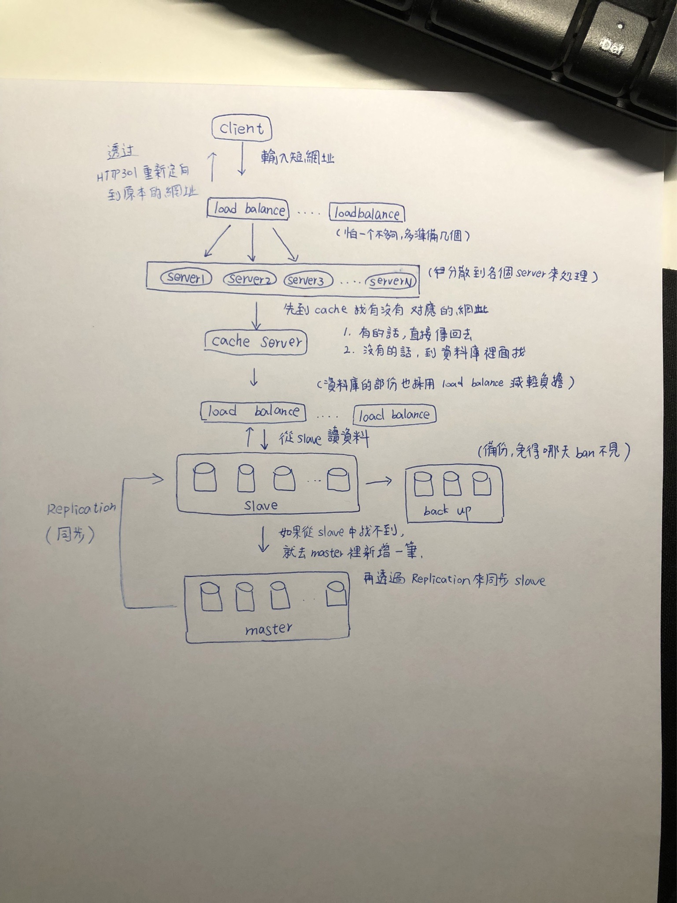
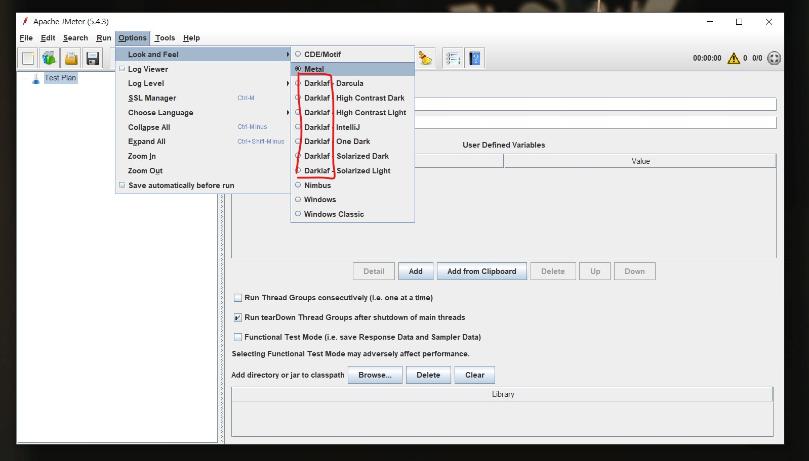

每天都更往前一步，很好。
進度
今天終於把架構圖畫出來了：

雖然看起來很 Low，也忽略了很多細節部分，不過畫完後有更加理解這整個流程，應該還是蠻有幫助的。
接下來就繼續寫剩下的作業，寫到 lock 的部分時發覺自己好像沒有很清楚，解釋的不夠清楚。所以又把 [MTR01] 挖出來複習，把以前做的筆記做得更完整一些：資料庫中的 Transaction 與 Lock。
明天應該就真的能完成作業了，加油加油。
學到的事情
在學一個知識時，如果可以「自己做過一遍」，真的對學習的效果確實會比較好。
今天實作了 lock 機制後，才更加理解這東西要怎麼用，還有它的適用場景。另外也因緣際會下摸到了一個新工具：Apache JMeter。
簡單來說就是個用來測試 server 的工具，不過有趣的是我在安裝這個工具時碰了一些小 bug，而 bug 的解法也意外地靠北：
- 安裝錯版本
官網的 下載頁面 有提供兩種版本，一種是「Binaries」，一種是「Source」，然後我一開始載的是 Source，想說 Binaries 看起來不太像是可以跑的東西。
結果把 JDK（Java Development Kit）裝好後卻還是一直開不起來，無奈之下只好爬文，發現這一篇：How to resolve the error “Unable to access jarfile ApacheJMeter.jar errorlevel=1” while initiating Jmeter?
裡面有人提到：
By mistake most people gets source of jmeter downloaded instead of binary . Because of that they don’t find ApacheJmeter.jar file under bin folder . So download binary not the source
簡單來說就是大家都下載成 source 啦，所以難怪開不起來，看來不是只有我一個人 XD
- 奇妙的主題樣式
這個 bug 也是夠神奇，如果使用「dark」系列的主題（靠北的是預設就是 dark），那就會沒辦法存檔。

詳細可以參考這篇：Why i cannot save the test plan in jmeter?
第一次見過這種 bug，太神啦。
題外話
看到美麗的風景會不自覺的放慢速度，享受這樣的寧靜時光。
許願池
希望明天把 week14 正式結束，然後進到下一週。